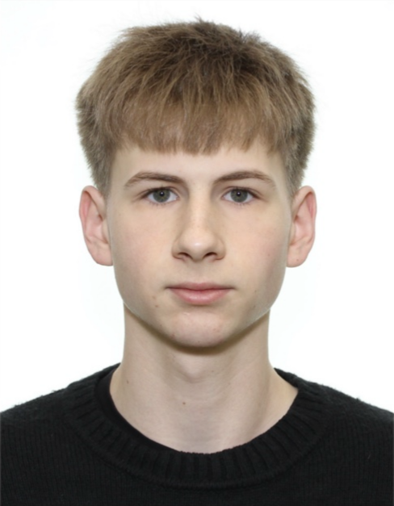

01 / РЕСТОРАНЫМОЙ ПРОЕКТ
Академия
счастья
Помогаю ресторанам понимать состояние команды, находить причины проблем и превращать обратную связь в реальные изменения.
Санкт-Петербург · открыт к проектам
Я знаю бизнес изнутри: работаю официантом, вижу процессы на реальных сменах и создаю сайты, Telegram-ботов и инструменты, которые решают понятные задачи.

01 / МОИ ПРОЕКТЫ
От ресторанной команды до цветочного магазина: у каждого проекта конкретная задача и живые люди за ней.
Помогаю ресторанам понимать состояние команды, находить причины проблем и превращать обратную связь в реальные изменения.
Telegram-бот для обратной связи после смены: команда делится сигналами, а руководитель видит, где нужна помощь.
Подбор букетов по поводу и бюджету, каталог и админ-панель. White label: ассортимент, цены, оформление и адреса — магазина.
02 / ЧЕМ МОГУ ПОМОЧЬ
Берусь за небольшие задачи и проекты под ключ. Сначала разбираюсь в задаче, затем предлагаю понятный объём и стоимость.
Лендинг, сайт-визитка или страница услуги: структура, дизайн, адаптация под телефон и запуск.
Заявки, каталог, ответы на частые вопросы, уведомления и простые рабочие сценарии.
Знак, цвета и оформление цифровых материалов для нового проекта.
Админ-панели, формы и внутренние сервисы для ресторанов и малого бизнеса.
Итоговая стоимость зависит от функций и объёма работы. После короткого разговора предложу решение и смету.
03 / ОБО МНЕ
Меня зовут Сергей Смирнов. Мне 20 лет, я живу в Санкт-Петербурге и учусь на 3 курсе Санкт-Петербургского политехнического университета Петра Великого по направлению «Торговое дело / управление бизнесом».
Работаю официантом в ресторанах MOJO и «Франжипани». На сменах вижу, как устроены сервис, команда и ежедневные процессы. Этот опыт помогает делать продукты, которыми действительно удобно пользоваться.
Развиваю «Академию счастья» и «Состояние смены», работаю над сервисом для цветочных магазинов и помогаю предпринимателям запускать сайты и ботов.
04 / СВЯЗАТЬСЯ
Можно прийти с готовым заданием или просто с проблемой. Разберёмся вместе.